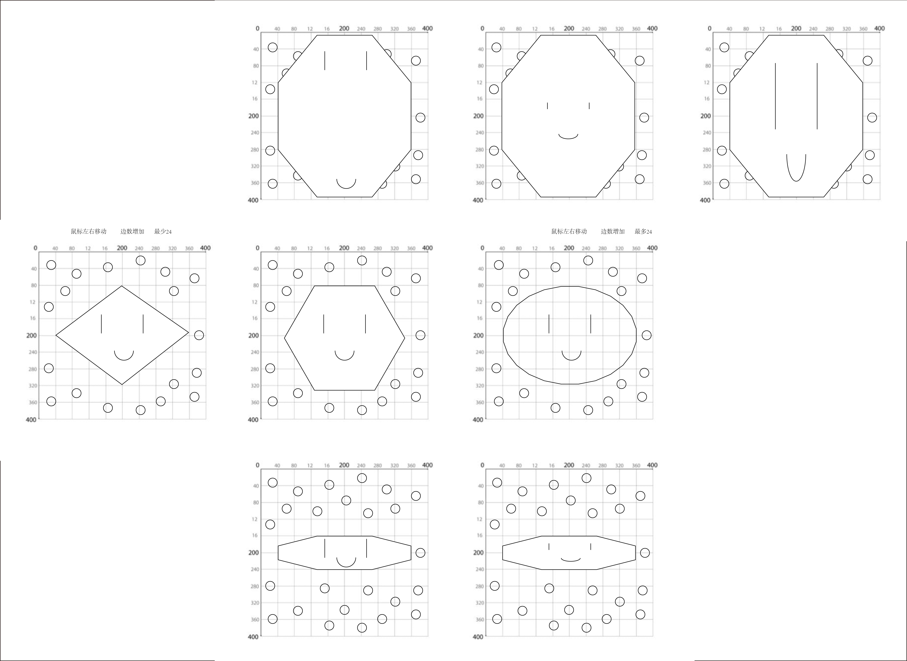

Step 1: Sketch
Step 2: Work with Code
Description
For Assignment 3, you will create a face generator using customized variables and the random() function. Plug the maximum / minimum values into the random() for each feature. The face generator will create multiple variations of the face through mouse or keyboard interactions. Test, iterate, and refine the parameters by paying great attention to details.
This is an individual assignment. You are welcome to ideate and brainstorm with your peers, but the work you submit should be your own.
Process & Reflection
While working with code, I made the original face at first, which is a still image. Then, I tried to put some variables in the code to achieve the movement I wanted. I noticed that there are some limitations for me because I am not very familiar with coding yet, so I have to make some changes to the original version. Also, when I searched different functions in p5.js, I found some interesting interactions with the mouse, which I didn’t expect before! So, the final version is different from the first version.
I think this kind of difference is very interesting because it was unexpected when I was working on the sketch at the beginning.
And I also think this kind of unexpected effect is according to different people. Even if two people see the same sketch at the beginning, they will generate different motions in the end.